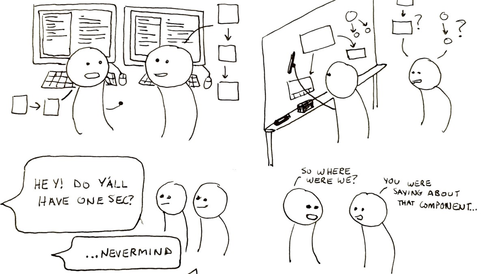

De ce întreruperile sunt de evitat în IT?
by Adrian Harabulă on 31 January, 2020
Atunci când lucrezi la ceva ai mai multe date încărcate în memoria temporară. De exemplu știi că e meeting la 5 și faptul că mai sunt 3 ore până atunci. Știi că ai timpul ăsta liber și găsești un lucru de făcut care să fie terminat. În timp ce lucrezi la task, mintea devine din ce în ce mai încărcată cu detalii ale taskului ce îl rezolvi. Îți aduci aminte că ai meeting de la 5, și că mai sunt 2 ore, și în același timp ești și focusat la treaba pe care o faci. Cu cât timpul se scurge cu cât mintea merge mai repede și se activează mai tare. Tocmai și în asta constă eficiența, fiind timp limitat, taskul se extinde în limita timpului disponibil. Când e gata timpul, e gata și taskul.
Ce se întâmplă dacă acum vine cineva să te întrebe dacă poți să îl ajuți cu ceva? Lași tot deoparte și ești cu atenția la persoana respectivă. Ai uitat că ai la 5 meeting și problema la care lucrai nu mai există de mult. Mintea se eliberează de tot ceea ce aveai până atunci ca să facă loc noii interacțiuni. Dacă un programator nu îți răspunde când vorbești cu el, este pentru că a ales să fie atent la problema ce o rezolvă. Nu e ceva de luat personal.
În continuare o poză cu programatorii atunci când sunt deranjați. 
Dacă tot îl întrerupi, e bine să ai un motiv suficient de bun încât să îi anuleze toată munca de până atunci. Întreruperile sunt foarte normale dar foarte important este aspectul legat de cât de prioritar este acel lucru cu care vii. Dacă ești în dubii, mai bine scrie un mail. E mai bine așa. La mail se poate răspunde și mai încolo, fără să se strice munca de până atunci a celui pe care îl deranjezi.
Cum recunoști un programator care e ocupat? În primul rând nu mai e atent la mediul din jur, cu cât e mai atent la o problemă devine mai puțin interesat de ce se întâmplă în mediul din jur. Desigur dacă știe că are ceva treabă, poate rămâne acasă, sau oriunde știe el că nu poate fi deranjat, dar poate e acolo pentru că dacă apare ceva ar vrea să fie acolo și tot din motive de eficiență e în mediul unde poate acționa și rezolva cel mai rapid cât mai multe probleme.
Și chiar dacă nu te refuză niciodată e din bunul simț al fiecăruia să nu întrerupi inutil dacă nu e nevoie. Programatorii se prind destul de repede când cineva îi deranjează inutil de mai multe ori și încep să te evite.
Nu e mare lucru, scrie un mail, sau un mesaj pe chat, acesta e lucrul care ar îmbunătăți comunicarea significativ cu oameni ocupați, dar care e prea puțin folosită.